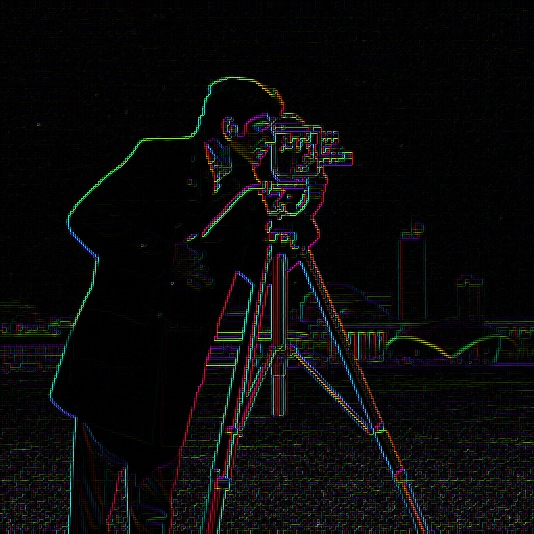
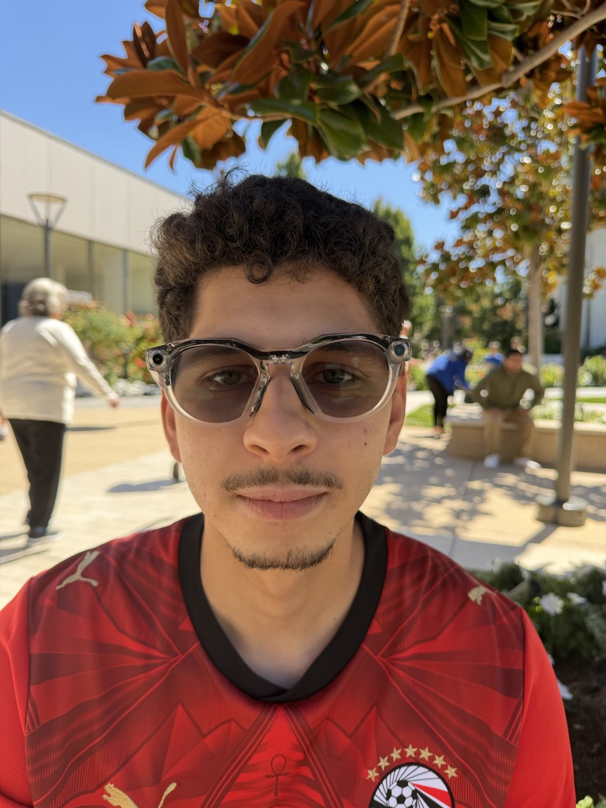
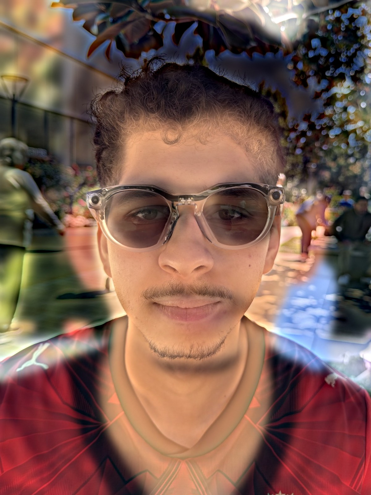
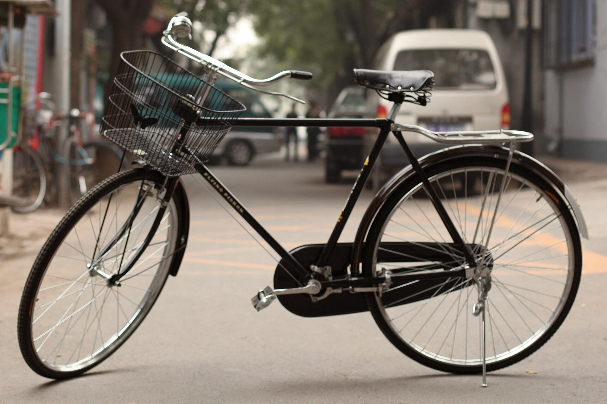
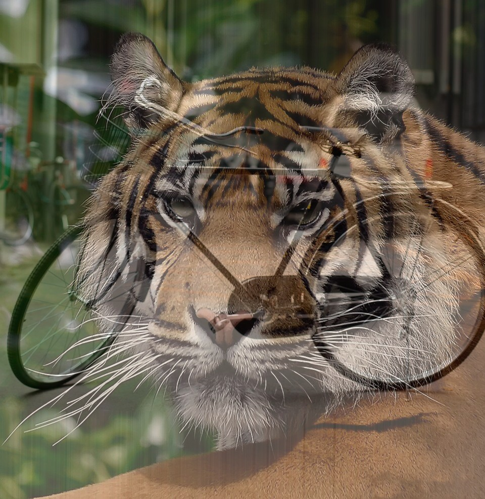
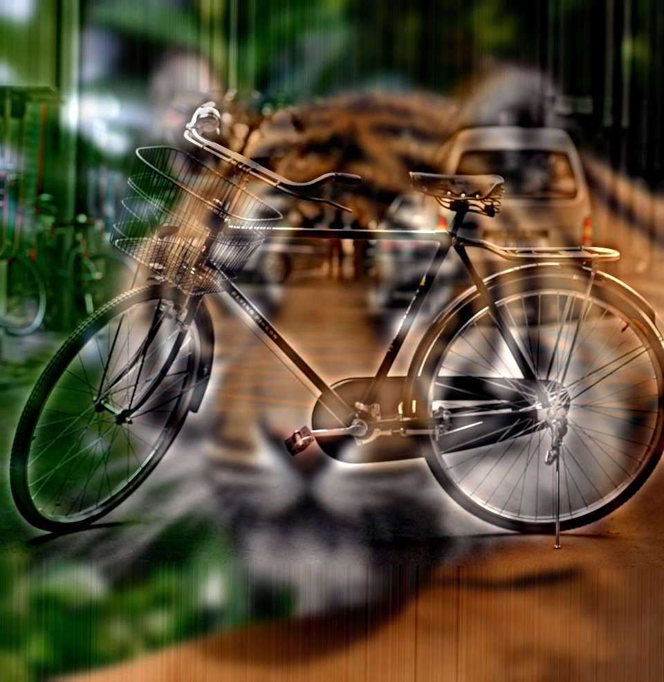
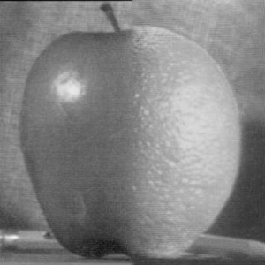
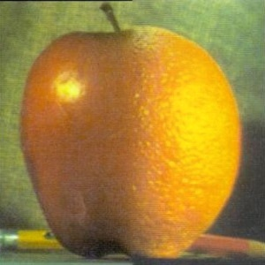
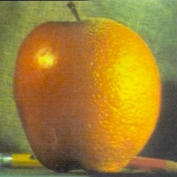

Project 2 · filters and frequencies · NumPy, scipy.signal, one OpenCV call
Fun with filters and frequencies
One operation, convolution, used eight ways: written out by hand, then used to find edges and their directions, to sharpen, to make pictures that change with viewing distance, and to join two pictures without a seam.
This is a print of afifi-yusuf.github.io/280a/proj2. On the web page the before/after comparator in part 2.1 is draggable; here it is static.

4→2loops
Part 1.1 · Convolution from scratch
What a convolution is. Every output pixel is a weighted sum of the input pixels around it, and the weights are the filter, flipped in both directions. The flip is what separates convolution from cross-correlation. It makes no difference for a symmetric filter like the box, and it changes the sign of the result for Dx and Dy.
Padding. I pad with zeros before sliding the filter. For full I add k−1 rows and columns on every side, so every partial overlap of the filter and the picture gives an output. For same I add k//2 before and (k−1)//2 after, which is the centre crop of full and gives an output the size of the input. For an odd filter the two amounts are equal. Dx is 1×2, so its one extra column goes on the left; that is the convention scipy uses, and it is why my results can be compared with scipy's value for value.
def pad_zero(im, kh, kw, mode):
if mode == "full":
top, bottom, left, right = kh - 1, kh - 1, kw - 1, kw - 1
elif mode == "same":
top, bottom, left, right = kh // 2, (kh - 1) // 2, kw // 2, (kw - 1) // 2
H, W = im.shape
out = np.zeros((H + top + bottom, W + left + right))
out[top:top + H, left:left + W] = im
return out
Four loops. Two loops over the output pixels, two over the filter taps. This is the definition written out.
def conv2d_four(im, kernel, mode="same"):
kh, kw = kernel.shape
k = kernel[::-1, ::-1] # convolution flips the filter
p = pad_zero(im, kh, kw, mode)
H, W = p.shape[0] - kh + 1, p.shape[1] - kw + 1
out = np.zeros((H, W))
for i in range(H):
for j in range(W):
acc = 0.0
for u in range(kh):
for v in range(kw):
acc += k[u, v] * p[i + u, j + v]
out[i, j] = acc
return out
Two loops. The two inner loops become one array operation: multiply the filter by the window under it and sum.
for i in range(H):
for j in range(W):
out[i, j] = np.sum(k * p[i:i + kh, j:j + kw])
| Filter on the 600×800 picture | Four loops | Two loops | scipy | Largest difference from scipy |
|---|---|---|---|---|
| 9×9 box | 4.09 s | 0.50 s | 0.026 s | 2e-15 |
| Dx (1×2) | 0.14 s | 0.45 s | 0.002 s | 0 |
| Dy (2×1) | 0.15 s | 0.46 s | 0.003 s | 0 |
Against scipy. All three give the same numbers as scipy.signal.convolve2d with zero fill, to rounding error. The box filter cannot show whether I flip the filter, because it is symmetric, so I also ran a 3×4 filter holding the numbers 0 to 11 on a small crop, in both modes. The shapes match scipy's (40×50 for same, 42×53 for full) and the largest difference is 1e-14. Leaving the flip out on purpose gives a difference of 17.5.
Runtime. For the 81-tap box the two-loop version is about 8 times faster than four loops, because 81 multiplications happen inside one NumPy call. For the two-tap derivative filters it is slower than four loops: a NumPy call has a fixed cost, and that cost is larger than two multiplications. scipy is 20 to 200 times faster than either, since none of its loops run in Python.
Boundaries. Zero padding means the filter averages in black near the border. After the box filter the top row of my picture has a mean of 0.19, against 0.34 five rows further in: a dark frame four pixels wide, visible on the blurred picture below. scipy with boundary="fill" does the same. For the derivative filters the frame of the picture becomes an edge of its own, which is why I switch to a mirrored border in the next section.


![D<sub>x</sub> = [1 −1]. Responds to vertical edges](images/conv/dx.jpg)
![D<sub>y</sub> = [1 −1]ᵀ. Responds to horizontal edges](images/conv/dy.jpg)
The derivative pictures are drawn as 0.5 + 2 × value, so gray is zero, white is brightness increasing to the right (or downward), black is decreasing. Dx finds the pole, the sides of the glasses and the edges of the collar. Dy finds the top of the glasses, the brow and the moustache.
0.10→0.30threshold
Part 1.2 · Finite difference operator
Partial derivatives. I convolve the cameraman with Dx = [1 −1] and Dy = [1 −1]ᵀ using scipy.signal.convolve2d. Each output pixel is the difference between a pixel and its neighbour: how fast the brightness changes across, and down.
Gradient magnitude. The two derivatives are the two components of the gradient vector at each pixel. Its length, √(gx² + gy²), says how strong the change is whatever its direction. An edge is where that length is large.
gx, gy = conv(im, DX), conv(im, DY) mag = np.sqrt(gx * gx + gy * gy) edges = mag > threshold
Two things about the input. The course PNG has a white margin around the photograph (7 rows on top, 1 below, 1 column on the left, 5 on the right). With it, the strongest edge in every result was a rectangle around the picture, so I crop it off. For the same reason I mirror the image at the border here (boundary="symm") instead of filling with zeros: the sky is bright, and a jump from sky to zero is a large gradient that has nothing to do with the scene.


Choosing the threshold. Pixel values run from 0 to 1 and the largest gradient magnitude in the picture is 0.87. At 0.10 and 0.15 the grass is covered in speckle: the grass texture has real pixel-to-pixel differences of that size, and a two-pixel difference cannot tell texture from an edge. At 0.25 and 0.30 the grass is clean, but the buildings on the horizon break up and the far tripod leg starts to go. I chose 0.20. It keeps the man, the camera, the tripod and the skyline, and accepts a little speckle in the grass as the price of keeping the buildings.
2→1convolutions
Part 1.3 · Derivative of Gaussian filter
Blur first. The speckle in the last section is noise and fine texture, which live at high frequencies, and a difference of neighbouring pixels amplifies exactly those. So I smooth first. The Gaussian comes from cv2.getGaussianKernel, a 1D kernel, and the outer product with its transpose makes it 2D. I use σ = 2 and a width of 6σ + 1 = 13, three σ on each side.
g = cv2.getGaussianKernel(13, 2.0) # 13 x 1 G = g @ g.T # 13 x 13 blurred = conv(im, G) gx, gy = conv(blurred, DX), conv(blurred, DY)


What is different. The grass speckle is gone at every threshold: the blur averaged it away before the derivative could amplify it. The edges are thick, continuous curves instead of broken one-pixel lines, because a blurred edge is a ramp several pixels wide and the whole ramp has a gradient. The cost is detail. The small parts of the camera merge, and the fine lines on the tripod head are gone. The numbers are smaller too: the largest magnitude drops from 0.87 to 0.16, since the same brightness step is now spread over many pixels, so the threshold has to come down with it. I chose 0.05, which keeps the buildings; at 0.07 they disappear.
One convolution instead of two. Convolution is associative: (image ∗ G) ∗ Dx = image ∗ (G ∗ Dx). So I can convolve the Gaussian with Dx and Dy once, and get two derivative of Gaussian filters that blur and differentiate in a single pass.
dog_x = convolve2d(G, DX, mode="full") # 13 x 14 dog_y = convolve2d(G, DY, mode="full") # 14 x 13 gx, gy = conv(im, dog_x), conv(im, dog_y)


Same result. Each filter is a smooth bump next to a smooth dip: it takes a weighted average on one side and subtracts a weighted average on the other. The largest difference between the one-pass and the two-pass derivatives, anywhere in the picture, is 1e-15, and at every one of the five thresholds the two edge maps agree on every pixel.
0→360degrees
Gradient orientationBells & whistles · part 1
What is shown. The gradient at a pixel is a vector, and so far I have only used its length. Its direction says which way the brightness increases, and that is perpendicular to the edge. I put the direction in the hue, which is a circle just as angles are, and the length in the value, so flat regions stay dark. Saturation is 1 everywhere.
The angle, without an angle function. I do not use arctan2, np.angle or any inverse trigonometric function on the image. I compute the angle with CORDIC, the method pocket calculators use. First I fold the vector into the right half plane (if gx is negative I negate both components and remember to add 180°). Then I rotate the vector towards the x axis in 24 steps. Step i rotates by the angle whose tangent is 2−i, clockwise if the vector is above the axis and anticlockwise if it is below. Rotating by such an angle needs only additions and a multiplication by 2−i. The steps get smaller each time, so the vector closes in on the axis, and the rotations I applied, added up with their signs, are the angle I started with. The 24 step angles themselves come from the power series of the arctangent, x − x³/3 + x⁵/5 − …, so nothing in the chain is a library angle function.
CORDIC_ANGLES = [pi / 4] + [atan_series(2.0 ** -i) for i in range(1, 24)]
def orientation(gx, gy):
x, y = gx.copy(), gy.copy()
left = x < 0 # fold into the right half plane
x[left], y[left] = -x[left], -y[left]
theta = np.zeros_like(x)
for i, a in enumerate(CORDIC_ANGLES):
d = np.where(y >= 0, 1.0, -1.0) # which way shrinks y
x, y = x + d * y * 2.0 ** -i, y - d * x * 2.0 ** -i
theta += d * a
theta[left] += pi
return np.mod(theta, 2 * pi)
As a check only, in the same way part 1.1 uses scipy, I compared the result with np.arctan2: the largest difference over the whole picture is 1.2e-07 radians. The conversion from HSV to RGB is also written by hand (six sectors of the hue circle) and matches Python's colorsys to 1e-16.



Reading it. I flip y so that angles read the usual way round: red is a gradient pointing right (dark on the left, bright on the right), yellow-green points up, cyan points left, purple points down. The left edge of the coat is cyan, because the bright sky is to its left. The top of the head is green. Each tripod leg is a dark bar on a lighter ground, so it has two edges with opposite gradients and shows as two lines in opposite colours. The third picture explains why strength has to go into the brightness: a direction is defined even where the gradient is nearly zero, and there it is the direction of noise. The second shows that the blur matters for direction as much as for magnitude; without it the direction of a one-pixel difference can only be one of a few values.
0.5→4α
Part 2.1 · Image sharpening
How it works. A Gaussian blur is a low-pass filter: it keeps the slow changes in a picture and removes the fast ones. So the picture minus its blur is what the blur removed, the high frequencies: edges and fine texture. A picture looks sharper when those are stronger, so I add them back, scaled by α.
As one filter. sharpened = image + α (image − image ∗ G). The image itself is image ∗ δ, where δ is the unit impulse (a filter that is 1 in the centre and 0 elsewhere), so everything is a convolution of the image and the three terms combine into one filter: (1 + α) δ − α G. Its weights sum to 1, so flat regions keep their brightness. Its centre is positive and everything around it is slightly negative, which is what pushes a pixel away from the average of its neighbours.
def unsharp_kernel(sigma, alpha):
g = cv2.getGaussianKernel(2 * ceil(3 * sigma) + 1, sigma)
k = -alpha * (g @ g.T)
k[k.shape[0] // 2, k.shape[1] // 2] += 1 + alpha
return k
sharpened = convolve2d(channel, unsharp_kernel(sigma, alpha), mode="same", boundary="symm")
The single filter and the three-step recipe give the same picture to 1e-15. Colour pictures are filtered one channel at a time.


Varying the amount. At α = 0.5 and 1 the Taj Mahal's inlay and the brickwork of the path come forward and the picture just looks better focused. At 2 the dome has a dark outline against the sky, and at 4 the outline is a halo and the JPEG blocks in the sky become visible. The halo is the negative ring of the filter showing up on the far side of every strong edge. The caption counts the values pushed outside [0, 1] and clipped, which is detail destroyed, not added.
My own picture. A department store wall I photographed for Project 0. It has three kinds of detail: the brushed concrete, the lettering, and the palm fronds. It is 1000 pixels tall, so I use σ = 2.


 blurred
re-sharpened
blurred
re-sharpened
Evaluation: blur, then sharpen. I took the sharp wall, blurred it with σ = 2, and tried to get it back with the unsharp mask at the same σ. The lettering recovers well: its edges are steep again and from a distance it reads as sharp. The concrete does not recover. In the original every brush stroke in the wall is visible; after the round trip the wall is smooth with a few exaggerated streaks.
The numbers agree. I measure the high-frequency energy of a picture as the RMS of (picture − its blur at σ = 2). The original has 0.047, the blurred one 0.010. Sharpening brings it back to 0.020 at α = 2, 0.029 at α = 4 and 0.045 at α = 8, about the original amount. But the RMS error against the original only goes from 0.047 to 0.040 at best (α = 2), and at α = 8 it is 0.061, worse than doing nothing. The energy is back; it is not the same detail.
That is the point of the quotation marks around "sharpening". The blur multiplied the finest frequencies by nearly zero. The unsharp mask multiplies each frequency by at most 1 + α, and that times nearly zero is still nearly zero. It can make surviving edges steeper. It cannot bring back what was removed; it has no information about it.


9→14σ px
Part 2.2 · Hybrid images
The idea. Up close the eye resolves fine detail, and fine detail dominates what we see. From far away the fine detail falls below what the eye can resolve and only the coarse structure is left. A hybrid image puts the fine detail of one picture on top of the coarse structure of another, so the picture changes with viewing distance.
Alignment. The two pictures have to agree where it matters, or the eye groups them as two overlapping things instead of one. The starter code asks for two clicked points per picture. I store the points in a file instead (the eyes, in pixel coordinates), so a run is repeatable, and compute the similarity transform (rotation, scale and shift) that carries the cat's eyes onto Derek's. The cat is resampled onto Derek's canvas, with the border pixels repeated where the cat's photo runs out.
t = SimilarityTransform.from_estimate(cat_eyes, derek_eyes) cat_aligned = warp(cat, t.inverse, output_shape=derek.shape[:2], mode="edge", order=3)
The filters. Low-pass is a Gaussian. High-pass is the impulse minus a Gaussian, which is the picture minus its blur. The hybrid is the sum.
def hybrid(low_im, high_im, s_low, s_high):
low = blur(low_im, s_low)
high = high_im - blur(high_im, s_high) # impulse minus Gaussian
return np.clip(low + high, 0, 1)


Choosing the cutoffs. A Gaussian of width σ passes half the amplitude at f = √(ln 2 / 2) / (πσ) cycles per pixel. I tried three widths for each filter; the grid below has the low-pass σ going down and the high-pass σ going across. With a narrow low-pass (σ = 4, top row) Derek keeps his eyes and teeth, and up close they compete with the cat's: the picture is a man in cat make-up at every distance. With a wide one (σ = 16, bottom row) he is a blob with no face to find from far away. With a narrow high-pass (σ = 6, left column) the cat is only whiskers and outlines, too faint to win up close. With a wide one (σ = 24, right column) the cat keeps its light and dark patches and is still visible from far away. I chose the middle: σ = 9 for Derek, a cutoff of 0.021 cycles per pixel or a period of 48 pixels, and σ = 14 for the cat (0.013 cycles per pixel, a period of 75 pixels). The two bands overlap a little, which I prefer to a gap: with a gap there is a middle distance at which neither picture reads.


In the frequency domain. Each picture below is log |FFT| of the gray image with zero frequency in the centre. Derek's spectrum is concentrated in the centre and falls off quickly: a smooth face on a plain background. The cat's is broader, from the fur, and its bright diagonal streaks are the tilted edges of the shelf and the wall. The low-pass keeps a small bright disc in the centre, and the high-pass is the opposite: the centre is dimmed and the rest is untouched. The hybrid's spectrum is Derek's disc set into the cat's surround. The thin cross along the axes in every picture, most obvious after the low-pass, is not in the scene. The FFT treats the picture as repeating, the left side does not match the right side nor the top the bottom, and that jump is a sharp edge that no blur inside the picture can remove.


4→93% chroma kept
Colour in hybrid imagesBells & whistles · part 2.2
Where colour helps. Colour belongs in the low frequencies. I split each picture into gray and the rest (the chroma) and measured how much chroma energy each filter lets through: the low-pass keeps 93% of Derek's, the high-pass keeps 4% of the cat's. Colour in a photograph changes slowly, over regions, and a high-pass filter removes regions. The pictures show it: "colour in the high" is almost the gray hybrid, with a faint tint along the cat's edges. "Colour in the low" gives Derek his skin tone, which makes him much easier to find from far away, and up close the skin tone reads as the cat's fur colour, so it does not hurt the near view. Colour in both looks the same as colour in the low alone. I use colour in both: it costs nothing and it is the simpler thing to say.


1→1/8viewing size
Part 2.2 · More hybrids
Tiger and cat. A tiger and a house cat have the same face plan: two forward eyes, a triangle of nose and mouth, round cheeks, ears on top. That makes them a good pair, because once the eyes are aligned everything else nearly is. The tiger goes in the low frequencies and the cat in the high ones. I tried it the other way round first and it does not work: a tiger's stripes are broad, so they are low-frequency content themselves, and a high-pass filter that keeps them also keeps enough of the tiger to be seen from any distance. With the tiger low (σ = 7) and the cat high (σ = 9), up close it is a hissing tabby with oddly orange fur, and at one eighth size it is a tiger. The cat's ears are the one thing that survives at a distance: they stick out past the tiger's outline, and an outline against a dark background is a strong edge at every scale.


One face from two distances. These are my two selfies from Project 0, one taken at arm's length with the wide lens and one from a few metres away, zoomed in. They are the same face at the same size, but the perspective differs: close up the nose is large, the face narrow and the ears hidden; from far away the face is broader and the ears show. Aligned on the eyes, the hybrid shows the close face up close and the far face from far away, so stepping back from the screen does what stepping back with the camera did. The face works. Around it the two photos disagree, because only the eyes are aligned: the collar of the jersey shows twice, and the far photo's background comes through as coloured fog.


A failure: tiger and bicycle. I chose this pair to fail, to see what alignment and shape are doing in the ones that work. There is nothing to align, so I placed the bicycle to fill the frame, and used the same filters as for the cat. It fails in both directions. Up close the tiger does not hide: the bicycle is thin lines with nothing between them, so most of the picture has no high-frequency content to cover the blurred tiger, and the stripes read straight through the frame. From far away the bicycle does not go: its wheels are large, dark, high-contrast rings, and a high-pass filter keeps the edges of a large shape as well as it keeps fine texture, so at quarter size the wheels are still there, across the tiger's face. In the hybrids that work, the two pictures put their edges in the same places, so each one's edges are explained by the other. Here the eye sees two pictures at every distance. The vertical streaks at the top and bottom are the bicycle photo's border pixels repeated, since the photo is wider than it is tall and does not cover the square frame.



1→16σ px
Part 2.3 · Gaussian and Laplacian stacks
Stacks. A pyramid blurs and halves the picture at each level. A stack blurs and keeps the size. Level 0 of my Gaussian stack is the picture, and each level after it is the previous one blurred again, with σ = 1, 2, 4, 8, 16. Doubling σ stands in for the halving a pyramid would do, so each level holds about half the frequency range of the one before. There are 6 levels. No pyramid function is used; the only library call is the Gaussian blur itself.
Laplacian stack. Each level is the difference between two neighbouring Gaussian levels, which is the band of frequencies the second blur removed. The last entry is the last Gaussian level, the leftover low frequencies. Because the differences telescope, the stack sums back to the picture exactly (to 1e-16 here), and that is what makes blending in this representation possible: I can change each band separately and add them up again.
def gaussian_stack(im, levels, sigma0=1.0):
out = [im]
for k in range(1, levels):
out.append(blur(out[-1], sigma0 * 2 ** (k - 1)))
return out
def laplacian_stack(im, levels, sigma0=1.0):
g = gaussian_stack(im, levels, sigma0)
return [g[k] - g[k + 1] for k in range(levels - 1)] + [g[-1]]


Laplacian levels are drawn with gray as zero and stretched to fill the range, each on its own scale, or the fine levels would look empty. The last level is a Gaussian level and is drawn as it is.
0→5band
Part 2.4 · Multiresolution blending
The blend. Joining two pictures along a line gives a visible seam, because the pictures differ at every frequency and the join is abrupt at every frequency. Feathering the join over a fixed width cannot fix that. A narrow feather leaves the slow differences in colour and brightness as a visible step. A wide one makes the fine texture of both pictures show through each other as a ghost. Burt and Adelson's answer is that the right width depends on the frequency, so I blend each band of the Laplacian stack with its own width: fine detail over a few pixels, broad colour over about a quarter of the picture.
I follow the algorithm on page 230 of the paper. The mask is a step, 1 on the apple's side and 0 on the orange's. I build a Gaussian stack of the mask with the same σ as the pictures, so level k of the mask is already blurred to the scale of band k. Each band of the result is mask × apple band + (1 − mask) × orange band, and the result is the sum of the bands.
def blend(a, b, mask, levels=6):
la, lb = laplacian_stack(a, levels), laplacian_stack(b, levels)
gm = gaussian_stack(mask, levels)
bands = [gm[k] * la[k] + (1 - gm[k]) * lb[k] for k in range(levels)]
return np.clip(sum(bands), 0, 1)


The figure. This is figure 3.42 of Szeliski for my stacks. In the finest band the mask is nearly a step and the two halves meet along a sharp line, which is right, because at that scale there is only texture and a sharp join between two textures is not visible. In band 2 the join is a soft ramp about ten pixels wide. In band 4 it is about forty. Within a row the three pictures share one scale, so the third really is the sum of the first two.
4→8levels
Part 2.4 · My own blends
Irregular mask: a cat with a tiger's face. The same two pictures as the hybrid, used differently. The tiger is aligned to the cat by the eyes, and the mask is an ellipse over the cat's face, wide enough to take in the tiger's white cheeks, because pale fur next to the cat's pale fur is an easier join than orange next to gray. With the mask used as it is, the result is a sticker. With the blend, the fine bands change over within a few pixels, so whiskers and hairs stay sharp and nothing is doubled, while the coarse bands change over across the whole cheek, so the orange drains into the tabby's beige with no edge to find. The images are 1200 × 1000, so the stack starts at σ = 2 (σ = 2, 4, 8, 16, 32) to cover the same fraction of the picture as the oraple's.


The process, as in figure 10 of the paper. Bands 0, 2 and 4 of each masked input and their sum, then all six bands added up. In band 0 the ellipse has a hard edge and both animals contribute only hair. By band 4 the tiger's contribution is a soft orange glow with no outline at all, which is why the join cannot be found in the result.


Straight seam: Earth and Mars. Two planets on black, cropped and scaled so the discs coincide (I find each disc by thresholding, and match the centroids and the equal-area radii). This pair is harder than the apple and the orange, and I include it because of how it fails. The fruits differ mostly in colour. The planets differ in everything: Earth is high-contrast cloud, Mars is nearly smooth, and their colours are opposite. The number of levels now matters. With four, the widest mask is narrow and the colour changes over a short distance, which reads as a soft-edged cut. With eight, the coarsest band is blended across most of the disc, and the colours mix over that whole width: Mars turns pink and Earth's oceans go mauve. Six is the compromise I kept. The general point is that the blend hides a seam between pictures that are already similar at coarse scales. Where they are not, the coarse bands have to change somewhere, and the only choice is over what distance.


1→4× mask width
Colour in blendingBells & whistles · part 2.4
Colour. I blend the three colour channels separately with the same mask stack. The blend is linear in the picture, so this is not really a choice: the gray version of the colour blend is the blend of the gray versions, and they agree to 9e-12. What is a choice is whether colour should change over the same distance as brightness. I split each picture into gray (luma) and the rest (chroma), blended them with mask stacks of different widths, and added them back.



In gray the oraple is already convincing, which says that most of what sells the blend is brightness and texture. Colour is what gives the two fruits away, so it is what needs the gentlest transition. With the chroma mask four times wider, red runs into orange a little more gradually across the middle. With it narrower, the colour changes a little faster than the shading does. Side by side the three are hard to tell apart, because most of the colour difference is in the coarsest band and that band is blended widely in every version. I keep the same width for both as the default, and would widen the chroma for pairs whose colours differ more than their brightness.
On a pair whose colours really differ. The oraple is a weak test of this, since an apple and an orange are close in colour to begin with. Earth and Mars are not, so I ran the same experiment on them, with one addition.


In gray the join is still easy to find, which I did not expect: it is cloud texture against smooth ground, so here colour is not the only thing giving the seam away. Widening the chroma mask spreads a pink haze onto Earth's limb and pales Mars near the middle; narrowing it keeps both planets' colours clean up to a crisper colour boundary. For this pair I prefer the narrower chroma, the opposite of what I would have guessed from the oraple: when the two colours are this far apart, every mixture of them is a colour that belongs to neither planet, so a short transition with less of that mixture looks better than a long one. The last picture answers the question from the other side. It keeps the blended brightness and takes all of its colour from Earth, and it reads as a single planet, a pale blue world with Martian terrain on one side. So colour is what says "two objects" here, and the way to use colour to enhance a blend is to make the colours agree (as they nearly do for the apple and the orange), not to find a cleverer way to mix colours that disagree.
0→1libraries
What is from scratch
Part 1.1 is NumPy only: padding, both convolutions, the box and difference filters. From part 1.2 on I use scipy.signal.convolve2d for speed, as the assignment allows, and cv2.getGaussianKernel for the 1D Gaussian. The gradient orientation (CORDIC and the arctangent series), the HSV conversion, the unsharp filter, the hybrid, both stacks and the blend are written by hand on top of those two calls. scikit-image is used once, to resample the aligned picture for the hybrids; Pillow reads and writes files. np.arctan2 and colorsys appear only in checks.